Transfer Case Cleaning and Inspection
Transfer Case Cleaning and Inspection
Tools Required
* J-2619-A Slide Hammer w/Adapter
* J 3289-20 Holding Fixture
* J 45548 Mainshaft Support Bushing/Bearing Remover
* J 46266 Bushing Installer
Case
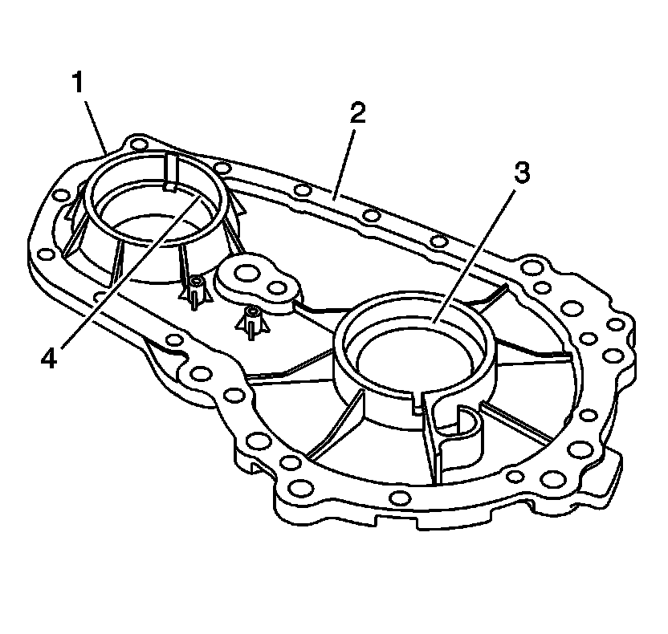
1. Clean the front case half in cleaning solvent and air dry.
Notice: Refer to Machined Surface Damage Notice (Machined Surface Damage Notice) .
2. Remove the sealer from the case sealing surfaces (2).
3. Inspect the case for being broken or cracked.
4. Inspect the front output shaft front bearing bore (4) for the following conditions:
* A spun bearing
* Cracks
5. Inspect the input shaft bearing bore (3) for the following conditions:
* A spun bearing
* Cracks
6. Replace the front case half if any of the above conditions are found.
7. Inspect the sealing surfaces (2) for damage.
8. Repair small scratches or nicks with a soft stone.
9. Inspect the front case to transmission case mounting surface for damage.
10. Inspect the front output shaft front bearing and the input shaft bearing for the following conditions:
* Roughness
* Brinelling
* Pitting
11. Replace the bearings if any of the above conditions are found. Refer to Transfer Case Disassemble (Transfer Case Disassemble) and Transfer Case Assemble (Transfer Case Assemble) .
Cover
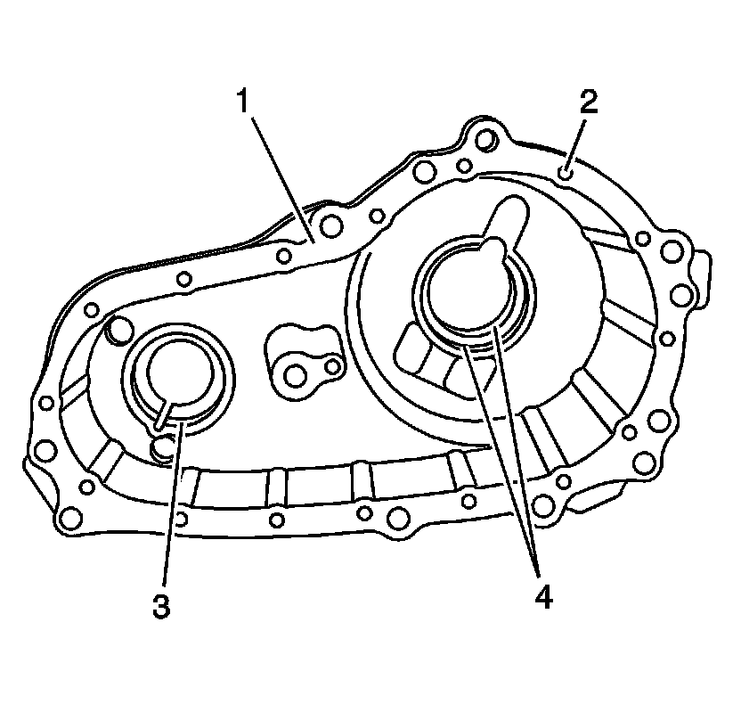
1. Clean the cover in cleaning solvent and air dry.
Notice: Refer to Machined Surface Damage Notice (Machined Surface Damage Notice) .
2. Remove the sealer from the case sealing surfaces.
3. Inspect the case for being broken or cracked.
4. Replace the case if it is broken or cracked.
5. Inspect the sealing surfaces (1) for damage.
6. Repair small scratches or nicks with a soft stone.
7. Inspect the case threaded bolt holes (2) for damage.
8. Repair any damaged threads.
9. Inspect the front output shaft rear bearing bore (3) for the following conditions:
* Spun bearing
* Cracks
10. Inspect the rear output shaft rear bearing bore (4) for the following conditions:
* Spun bearing
* Cracks
11. Replace the case if the bearing has spun. Refer to Transfer Case Disassemble (Transfer Case Disassemble) and Transfer Case Assemble (Transfer Case Assemble) .
Differential Components
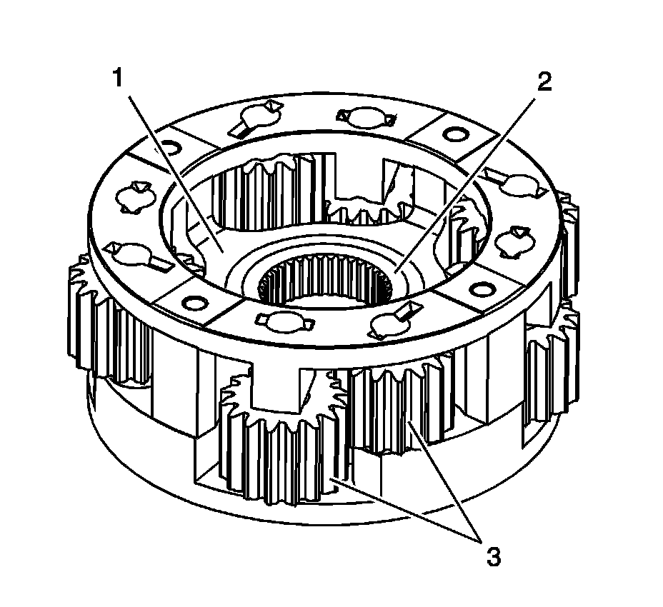
1. Clean the planetary differential in cleaning solvent. Do not disassemble the planetary differential.
2. Air dry and ensure all cleaning solvent is removed from the bearings in the pinion gears (3). Do not spin the pinion gears with compressed air.
3. Inspect the pinion gears for the following conditions:
* Chipped teeth
* Debris embedded in the root of the teeth
* Excessive side movement from worn bushings or shafts
4. Inspect the planetary housing for cracks at the web (1) of the housing.
5. Inspect the thrust washer surface (2) for scoring or excessive wear.
6. Inspect the planetary housing for distortion.
7. Inspect the planetary housing to mainshaft splines for excessive wear.
8. Replace the planetary differential if any of the above conditions are found.
9. Inspect the planetary thrust washers for excessive wear or scoring.
10. Replace the thrust washers if they are faulty.
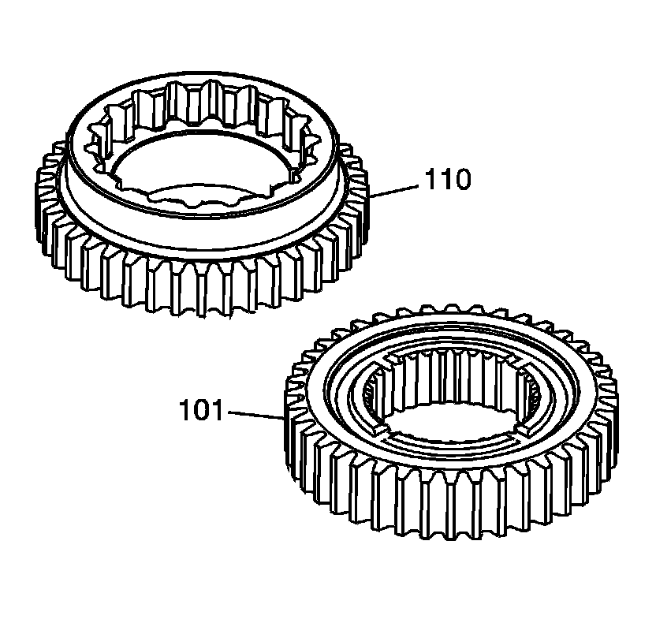
1. Clean the front sun gear (110) and the rear sun gear (101) in cleaning solvent and air dry.
2. Inspect the teeth on the front sun gear (110) and the rear sun gear (101) for the following conditions:
* Chipped teeth
* Excessively worn gear surfaces
Slight wear marks are normal.
* Debris embedded in the root of the teeth
3. Inspect the thrust washer surfaces for excessive wear or scoring.
4. Replace the front sun gear (110) and the rear sun gear (101) if they are faulty.
Drive Chain and Sprockets
Drive Chain and Sprockets:
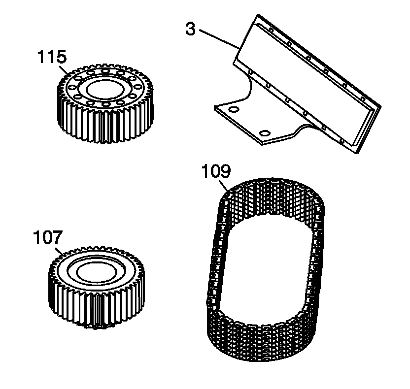
1. Clean the drive chain (109), drive sprocket (107), snubber (3), and driven sprocket (115) in cleaning solvent and air dry.
2. Inspect the drive chain (109) for the following conditions:
* Loose link pins
* Binding or stiff links
* Debris embedded in the links
* Worn teeth surfaces
3. Replace the chain if any of the above conditions are found.
4. Inspect the driven sprocket (115) and the drive sprocket (107) for the following conditions:
* Chipped teeth
* Excessively worn gear surfaces
Slight wear marks are normal.
* Debris embedded in the root of the teeth
5. Inspect the drive sprocket (107) and bushing (105) for the following conditions:
* Excessive wear
* Scoring
6. Replace the sprockets if any of the above conditions are found. The chain and sprockets may be replaced separately.
7. Inspect the snubber (3) for an excessively worn or gouged lining.
Slight wear marks are normal.
8. Inspect the chain and sprockets for the cause of the wear. Replace as required.
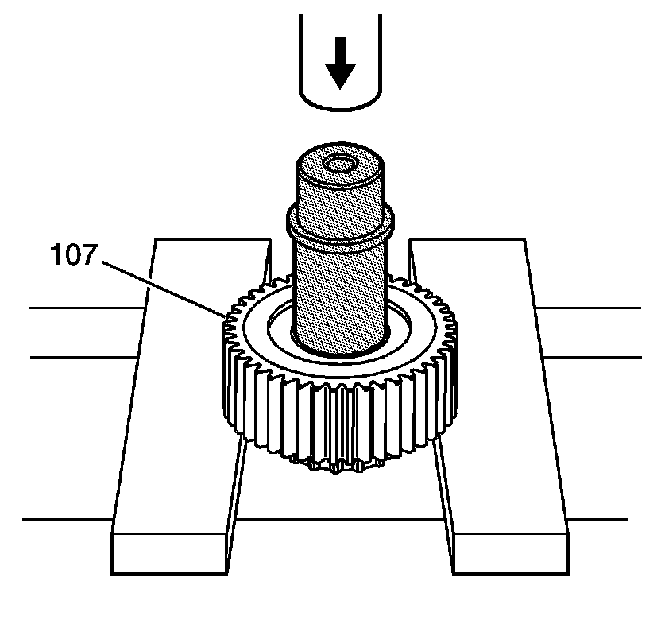
9. If the bushing in the sprocket (107) is damaged, it can be replaced using the J 46266 and a press to remove the bushing.
10. Clean the bushing bore with solvent.
11. Inspect the bushing bore for nicks or burrs.
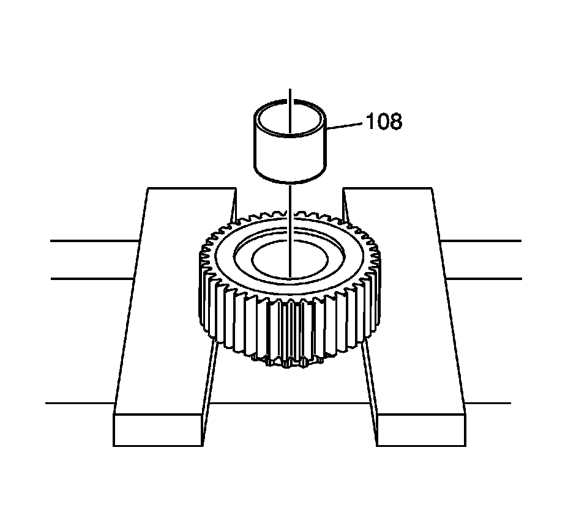
12. Place the NEW bushing (108) in the sprocket bore.
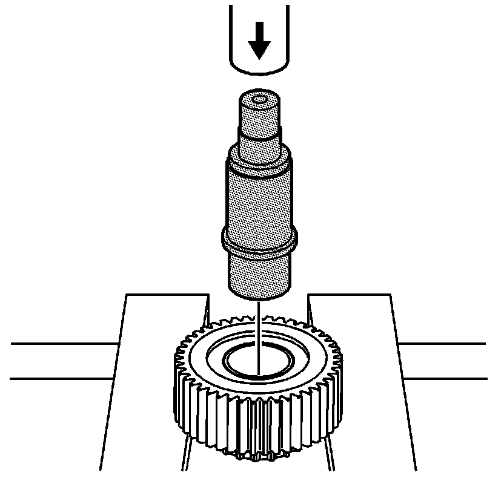
13. Use the other side of the J 46266 and press in the NEW bushing until the tool meets the sprocket.
Input Shaft
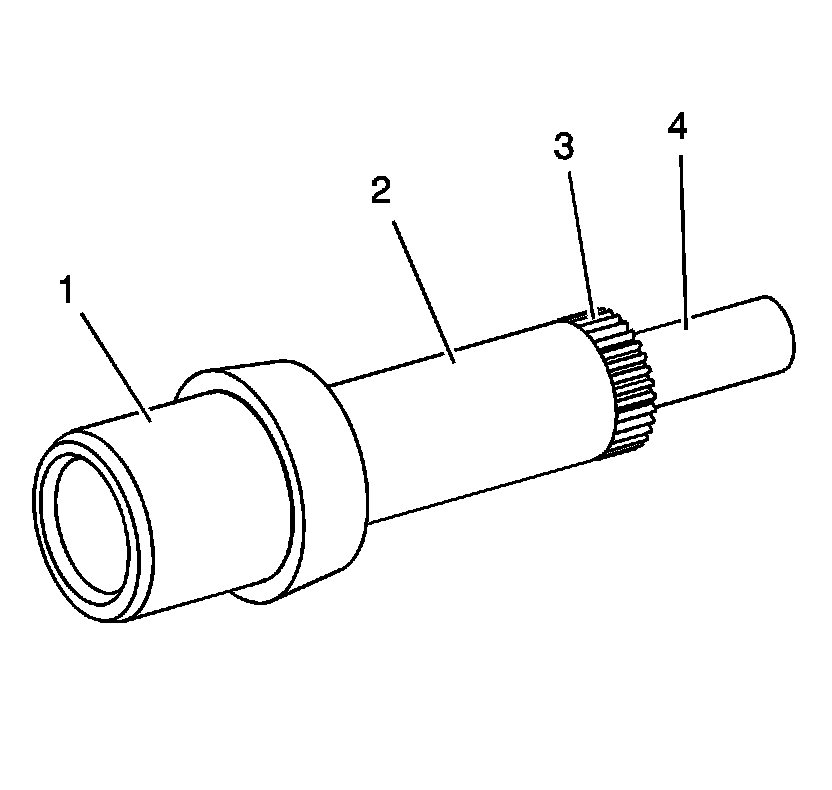
1. Clean the input shaft in cleaning solvent.
2. Inspect the input seal surface (1) for excessive grooves or damage.
Important: Do not attempt to smooth any roughness in the bearing journals.
3. Inspect the bearing journals on the input shaft for the following conditions:
* The drive gear bushing (2)
* The rear support bushing end (4)
- Scoring
- Pitting
- Excessive wear
4. Inspect the input shaft planetary carrier assembly splines (3) for damage or excessive wear. Witness marks at the location of the gear is normal.
5. Replace the input shaft if any of the above conditions are found.
Front Output Shaft
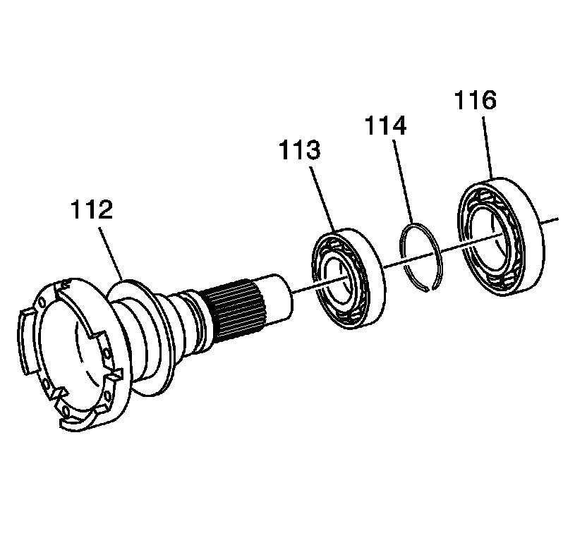
1. Clean the front output shaft (112) in cleaning solvent and air dry.
2. Inspect for spun bearings at the front output shaft bearing areas.
3. Inspect the front output internal splines and driven gear splines for damage or excessive wear.
4. Replace the front output shaft if it is damaged.
5. Inspect the front output shaft bearings (113 and 116) for the following conditions:
* Scoring
* Pitting
* Brinelling
* Excessive wear
6. Replace the front output shaft bearings if they are faulty. Refer to Transfer Case Disassemble (Transfer Case Disassemble) and Transfer Case Assemble (Transfer Case Assemble) .
Rear Output Shaft
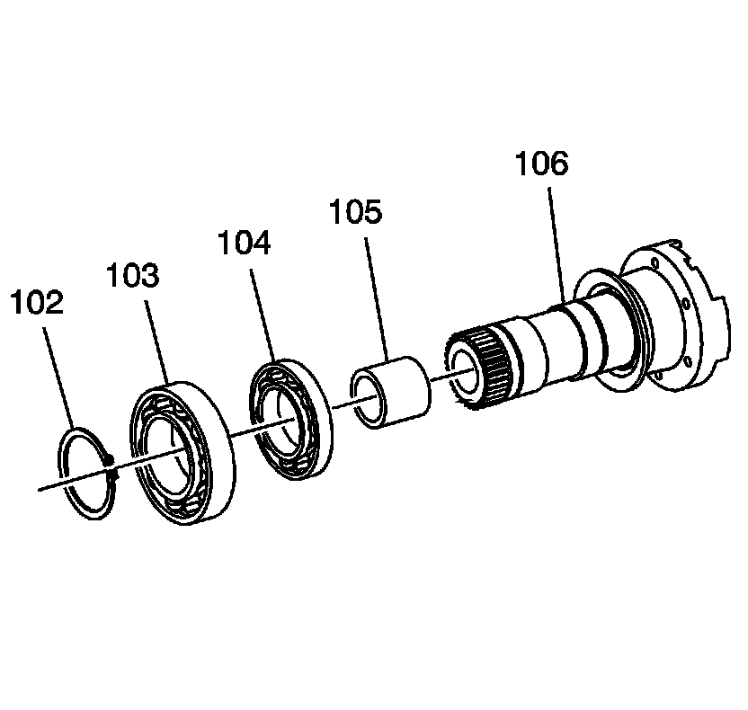
1. Clean the rear output shaft (106) and rear output shaft bearings (104) in cleaning solvent.
2. Air dry and ensure all solvent is removed from the bearing.
3. Inspect the rear output shaft bearings (103 and 104) for the following conditions:
* Scoring
* Pitting
* Brinelling
* Excessive wear
4. Replace the rear output shaft bearings if they are faulty. Refer to Transfer Case Disassemble (Transfer Case Disassemble) and Transfer Case Assemble (Transfer Case Assemble) .
5. Inspect the mainshaft rear support bushing (105) for the following conditions:
* Pitted
* Wear
* Corrosion
6. Replace the rear output shaft if any of the above conditions are found.
7. Inspect the rear output shaft splines for wear or damage.
8. Inspect the rear output shaft bearing area for a spun bearing.
9. If the bearing area or splines are damaged, replace the rear output shaft.
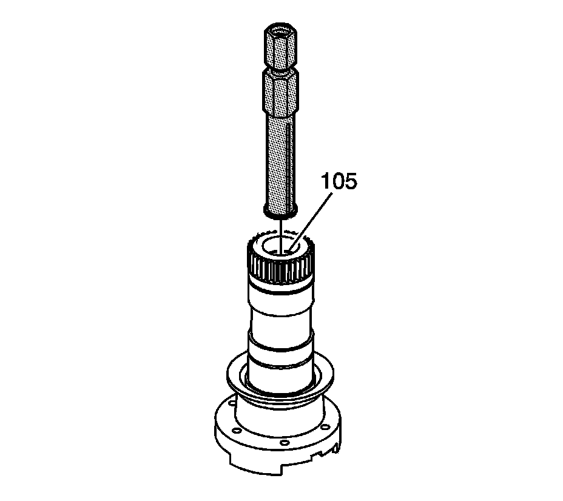
10. If the bushing (105) is damaged, it can be replaced. Place the J 45548 inside the bushing.
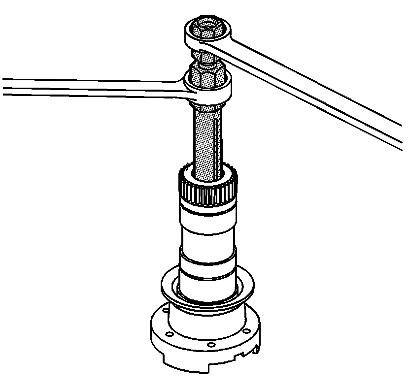
11. With the ridge on the J 45548 , behind the bushing, tighten the center bolt of the J 45548 in order to lock it behind the bushing.

Important: Do not put the output shaft in a vise.
12. With position pins removed from the J 3289-20 , place the output shaft as shown.
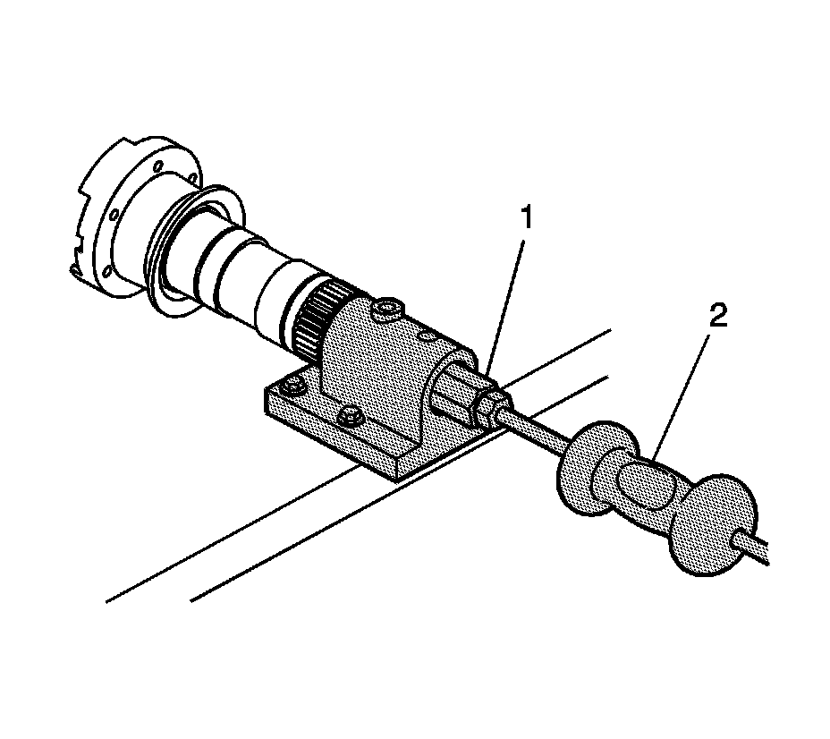
13. Insert the J-2619-A (2) into the J 45548 (1) and pull the bushing from the output shaft.
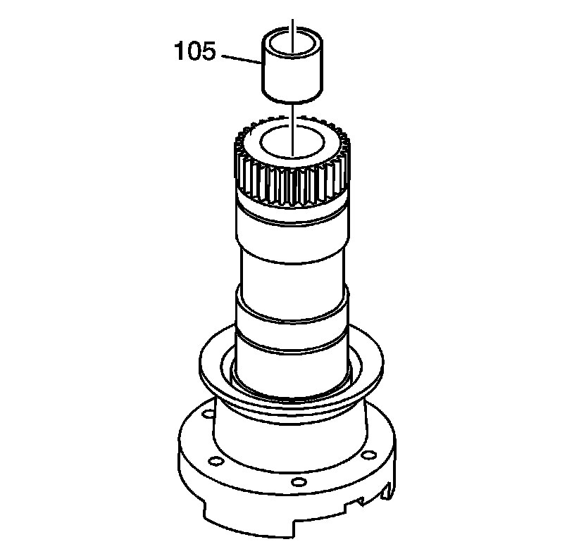
14. Clean the bushing bore with solvent. Inspect for nicks and burrs.
15. Place a NEW bushing (105) in the bore.
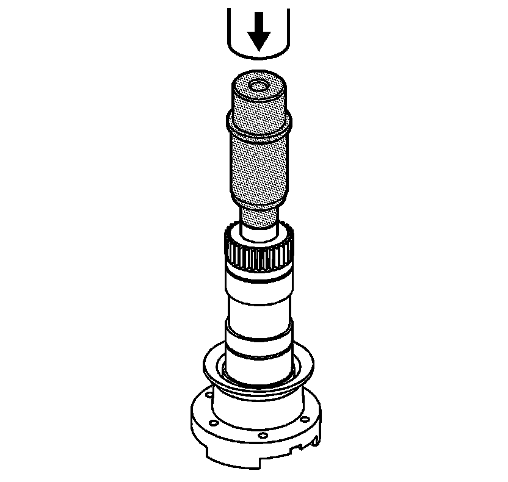
16. Place the J 46266 into the bushing as shown.
17. Using a press, push the bushing into the bore until the tool meets the output shaft.